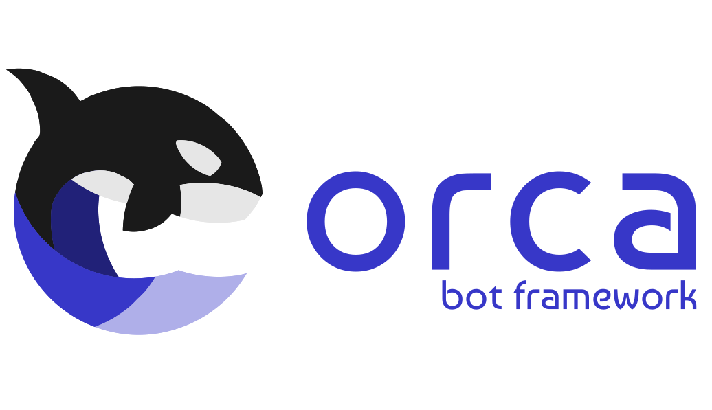

Welcome to Orca¶
A Multi-REST API library that is easy to reason about, easy to debug, and easy to use.
Features:
Easy to use for the end users
We provide internal synchronization so that the user may provide scalability to his applications without having to excessively worry about race-conditions. All transfers made with Orca are thread-safe by nature.
Easy to reason about the code
We use the most native data structures, the simplest algorithms, and intuitive interfaces.
Easy to debug (networking and logic) errors
Extensive assertion and logging facilities.